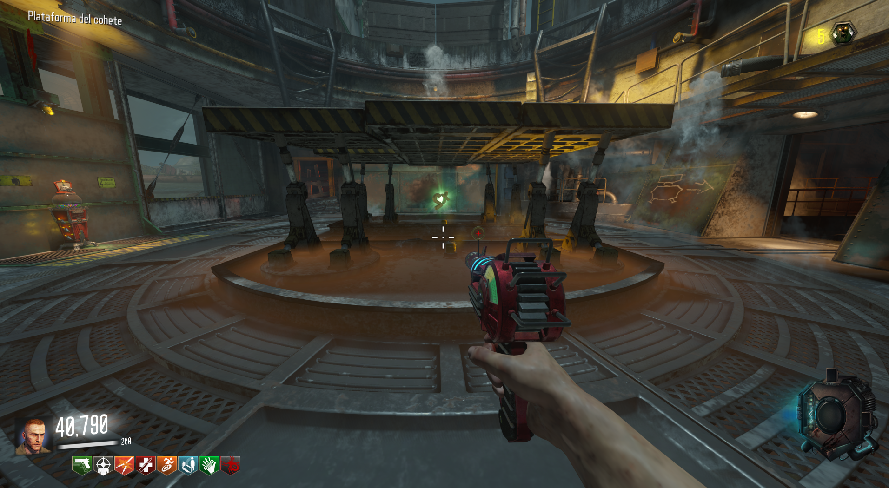

Lo único que tendremos que hacer es desbloquear el PaP, y justo cuando el cohete comience a despegar le dispararemos. Recomiendo usar alguna Raygun. Hecho esto, iremos a la sala del cohete y veremos el doble points en el lugar. 